Android emulator verification · 24 Aug 2026
Issue #127
Chat
Reproduced, implemented, regression-tested, and verified on-device. The notification flow now opens the request itself; chat copy, previews, errors, accessibility, and member actions follow the issue specification.
Outcome
FlowNotification → JoinRequest
MessagesAll preview variants correct
RequestsShared rows and new empty copy
ThreadPlan/date, AM/PM, safe actions
Implemented scope
| Area | Implementation | Verification | Result |
|---|---|---|---|
| Navigation |
Split the former polymorphic route into OneToOneHub and full-page
JoinRequest. The server resolves active pending requests to request
review, including 1:1 requests with no conversation ID.
|
Fresh notification created and tapped on-device. | PASS |
| Messages list |
Resolve other-user prefixes from lastMessage.senderId; system previews
remain body-only; new join copy is “joined the plan”; empty placeholders remain
distinct.
|
Three live rows show other sender, system, and empty variants together. | PASS |
| Safe errors | Conversation, refresh, socket, send, and remove failures use fixed user-safe copy. Raw errors stay in development logs. | Backend stopped deliberately for device capture; focused tests cover every copy. | PASS |
| Pending requests |
Close accessibility label is “Close”; empty copy is “No requests” / “Join requests
will appear here.”; rows reuse EventRequestRow truncation.
|
Accessibility tree and populated/empty sheet states inspected. | PASS |
| Chat thread | 1:1 subtitle is plan name + date, group member grammar is singular-aware, and inline timestamps use AM/PM. | Separate 1:1 and host-only group conversations opened on-device. | PASS |
| Member actions | Report and remove remain separate actions; report uses the shared Event Details overlay; remove failures use the exact specified alert. | Both sheets opened and a network failure was forced. | PASS |
1. Notification flow
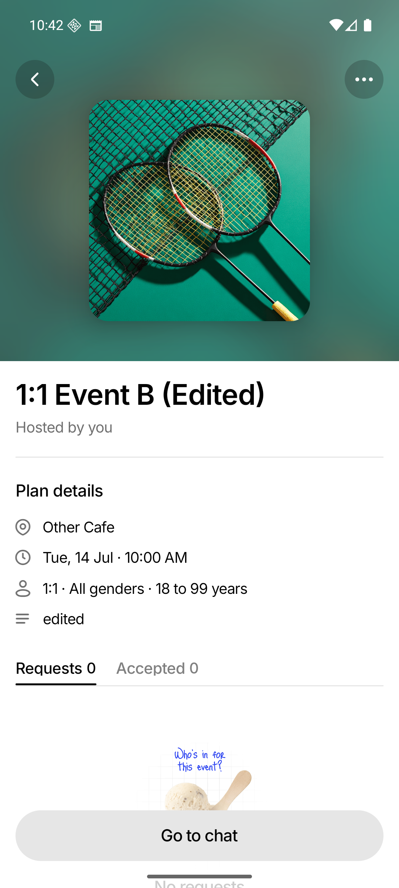
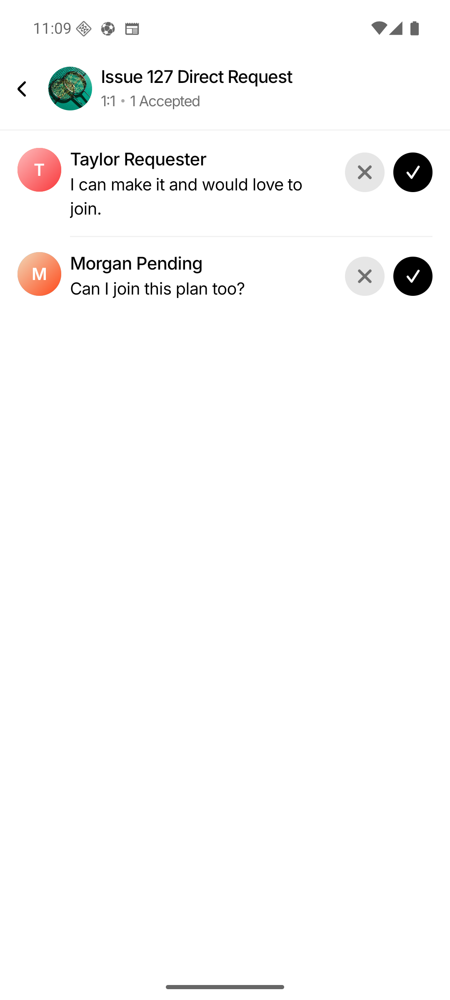
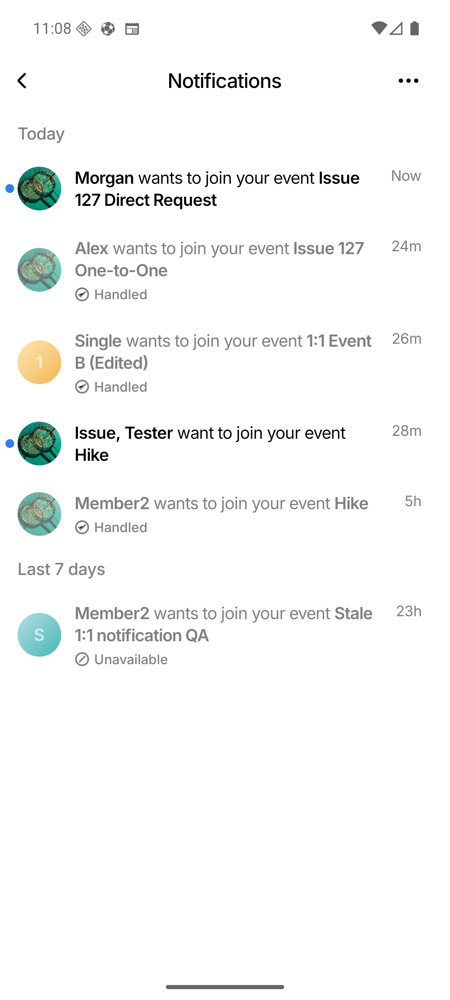
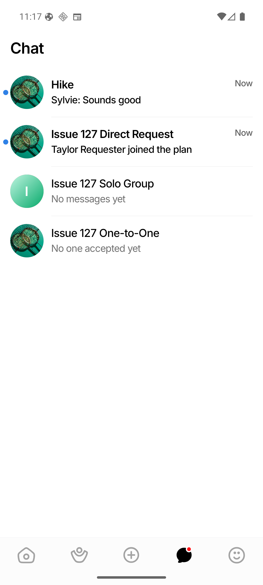
2. Messages preview variants
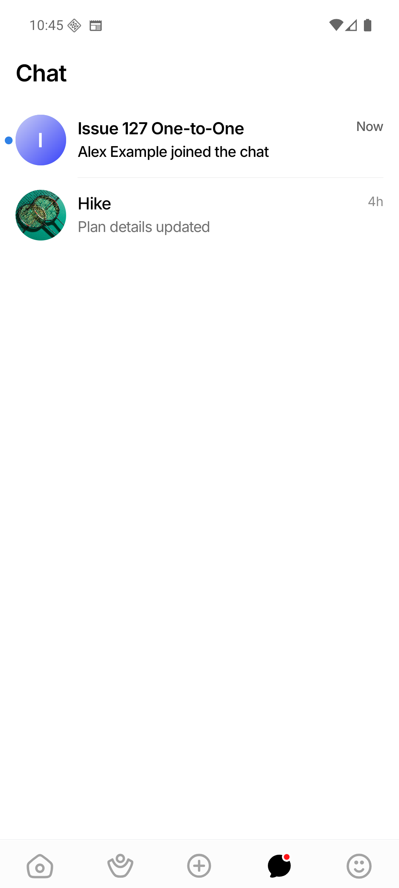
3. Pending Requests bottom sheet
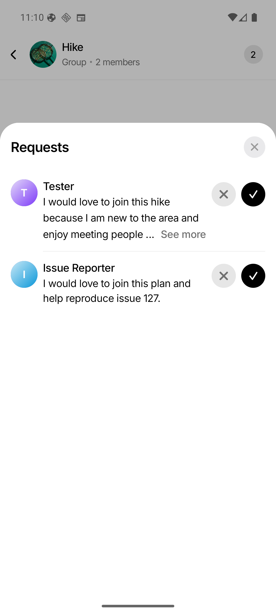
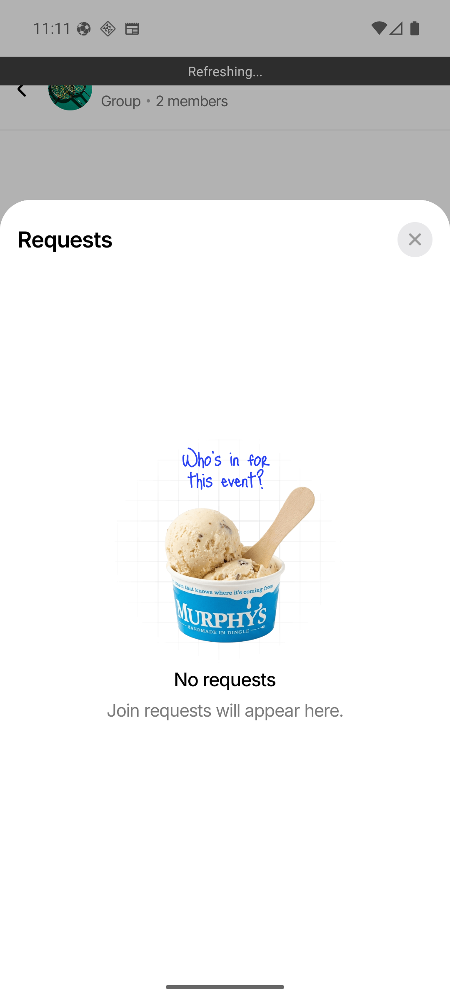
4. Chat thread and actions
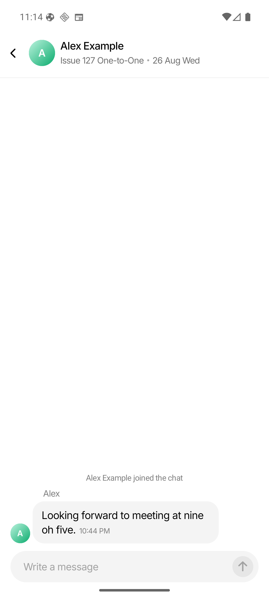
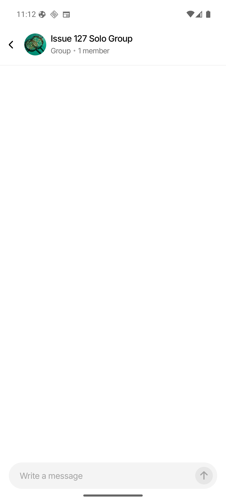
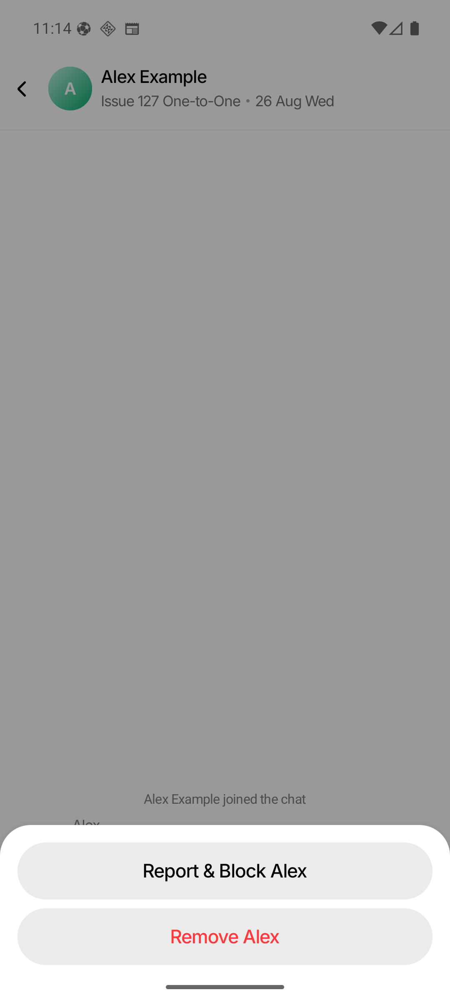
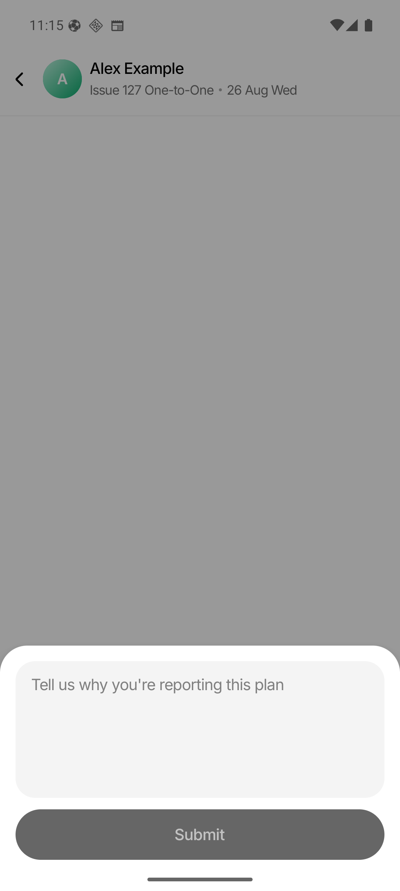
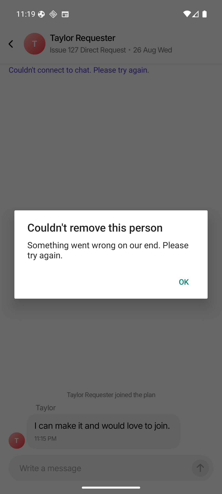
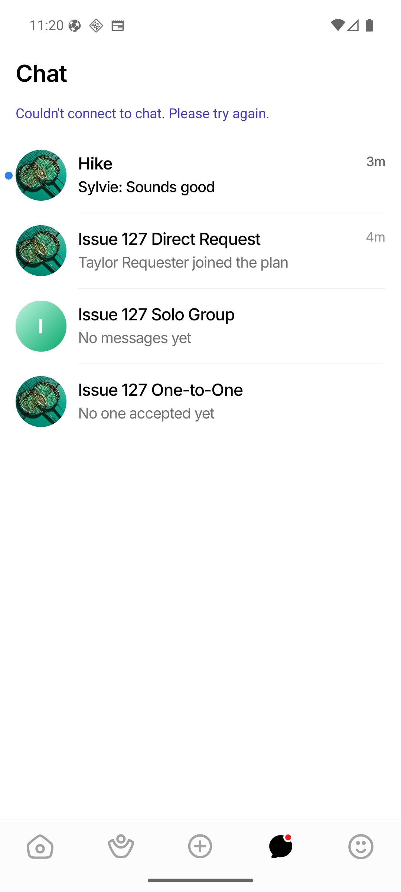
Historical data note: existing persisted announcements keep their
original wording. Newly generated announcements use “joined the plan”; the schema backfill
recognizes both forms as system messages.
Validation
- Frontend: 85 suites, 1,254 tests passed
- Backend:
go test ./...passed - TypeScript:
tsc --noEmitpassed - Lint: 0 errors; existing warning baseline remains
- Formatting: touched files formatted
- Diff whitespace check passed
- Fresh notification without conversation verified
- Forced network failures verified on-device